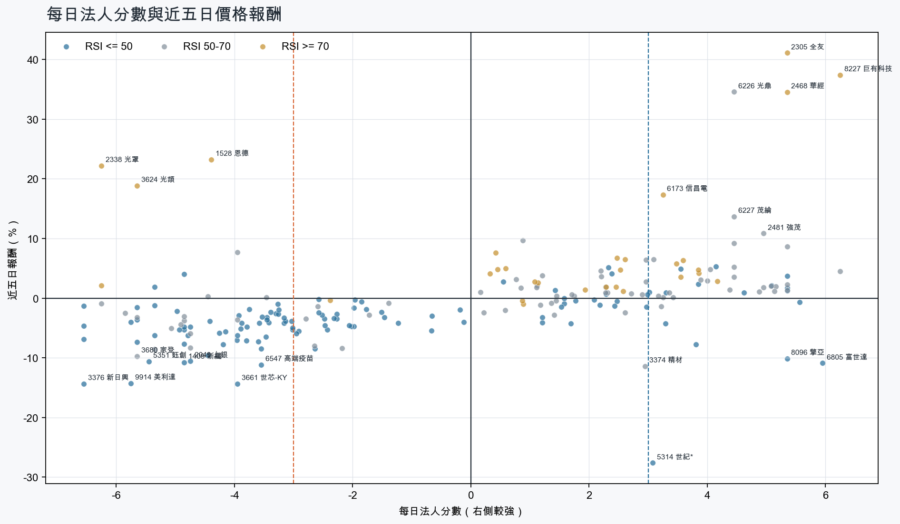
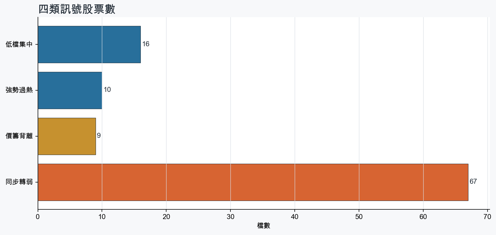
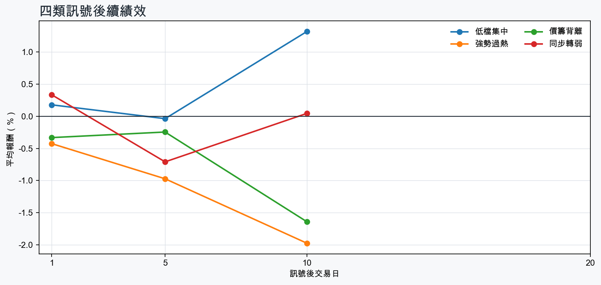

市場情緒偏空
近5日法人合計-5,035,187 張
篩選池上漲比例41.4%
籌碼好 / RSI低15 檔
籌碼差 / 價跌15 檔



EPS × PE VALUATION
法人常用的相對估值
顯示保守、基準與樂觀估值帶，不把單一數字包裝成精準目標價。
最新累計 EPS 依季數年化 × 同產業有效 P/E 的 Q25／中位數／Q75。排除本公司、非正 P/E，並以 1.5×IQR 排除離群值。估值帶是公開資料篩選值，不是法人目標價；未使用分析師預估 EPS。
MOOD × MONEY
情緒與籌碼雷達
熱度代表被討論程度；情緒分與法人方向分開計算。熱門不等於適合追價，樣本不足也不硬判多空。
| 股票 | 情緒 | 討論熱度 | 情緒 × 籌碼 | 情緒 × 基本面 |
|---|---|---|---|---|
| 3376 新日興同步轉弱 | 中性分歧 +0.0信心 30 | 1000 篇 / 0 留言 / 3 則新聞 | 高熱分歧法人分 -6.5 | 基本面與情緒分歧基本面分 -1.8 |
| 6669 緯穎同步轉弱 | 偏空 -29.7信心 30 | 1000 篇 / 0 留言 / 3 則新聞 | 情籌雙弱法人分 -6.5 | 基本面佳、情緒悲觀基本面分 +3.0 |
| 6547 高端疫苗同步轉弱 | 中性分歧 +0.0信心 30 | 1000 篇 / 0 留言 / 3 則新聞 | 高熱分歧法人分 -3.5 | 基本面與情緒分歧基本面分 -0.2 |
| 2464 盟立同步轉弱 | 偏多 +29.7信心 30 | 1000 篇 / 0 留言 / 3 則新聞 | 熱門但法人撤退法人分 -5.7 | 基本面與情緒共振基本面分 +3.0 |
| 4939 亞電同步轉弱 | 偏空 -29.7信心 30 | 1000 篇 / 0 留言 / 3 則新聞 | 情籌雙弱法人分 -4.5 | 基本面佳、情緒悲觀基本面分 +3.0 |
| 8039 台虹同步轉弱 | 中性分歧 +0.0信心 30 | 1000 篇 / 0 留言 / 3 則新聞 | 高熱分歧法人分 -4.8 | 基本面與情緒分歧基本面分 -0.1 |
| 3715 定穎投控同步轉弱 | 偏多 +29.7信心 30 | 1000 篇 / 0 留言 / 3 則新聞 | 熱門但法人撤退法人分 -5.3 | 基本面與情緒共振基本面分 +1.0 |
| 2338 光罩價籌背離 | 偏多 +29.7信心 30 | 1000 篇 / 0 留言 / 3 則新聞 | 熱門但法人撤退法人分 -6.2 | 基本面與情緒分歧基本面分 +0.4 |
| 1528 恩德價籌背離 | 中性分歧 +0.0信心 30 | 1000 篇 / 0 留言 / 3 則新聞 | 高熱分歧法人分 -4.4 | 基本面與情緒分歧基本面分 -0.2 |
| 3624 光頡價籌背離 | 中性分歧 +0.0信心 30 | 1000 篇 / 0 留言 / 3 則新聞 | 高熱分歧法人分 -5.7 | 基本面與情緒分歧基本面分 +3.6 |
| 3450 聯鈞價籌背離 | 中性分歧 +0.0信心 30 | 1000 篇 / 0 留言 / 3 則新聞 | 高熱分歧法人分 -4.8 | 基本面與情緒分歧基本面分 +3.6 |
| 2426 鼎元價籌背離 | 中性分歧 +0.0信心 30 | 1000 篇 / 0 留言 / 3 則新聞 | 高熱分歧法人分 -4.5 | 基本面與情緒分歧基本面分 +2.4 |
01
籌碼好 / RSI低
優先研究基本面；法人續買且價格止穩時，才適合分批觀察。
| 股票 / 確認狀態 | 每日法人分 | 浦男式近似 | 法人加速度 | RSI / 相對強弱 | 量價確認 | 融資融券 | 每週集保確認 | 基本面 | EPS × 同業 P/E 估值 | 情緒 / 情籌 | 近期消息 | 論壇討論 |
|---|---|---|---|---|---|---|---|---|---|---|---|---|
| 6805 富世達可研究 · 100 分籌碼與價格確認，可列研究清單 | +6.0法人 +842 張 / 5 天 | 接近 · 81中期均線偏多；法人籌碼偏多；法人買盤加速；留意未站月線、量能尚未確認 | +91 張近3日 +639 / 連續 +9 日 | 41.9相對大盤 +11.1% | 量比 0.68確認分 +3.4收盤跌破20日線 | -%融資 - 張 / 融券 - 張 | +3.18 pp1000張 +6.24 pp | 單月營收年增 +29.1%；累計營收年增 +49.8%；2026 Q2 累計 EPS 25.77仍需觀察下一期財報延續性來源：公開資訊觀測站 | 基準 NT$ 1,302估值帶 905.0–2,195現價 2,045 · 估值帶內 · 距基準 -36.3%2026 Q2 累計 EPS 25.77 → 年化 51.54電子零組件同業 P/E 17.56／25.27／42.59 · n=150 · 信心中等以 Q2 累計 EPS 年化，不等同分析師全年預估來源：TWSE／TPEx 每日本益比 | 樣本不足 +0.0熱度 0 / 信心 0情緒樣本不足 | 近期沒有通過股票語境篩選的新聞 | 近期沒有明確提及本股的論壇樣本 |
| 2351 順德可研究 · 100 分籌碼與價格確認，可列研究清單 | +5.6法人 +1,814 張 / 4 天 | 命中 · 93站上月線；中期均線偏多；法人籌碼偏多；留意法人買盤未加速 | -326 張近3日 +1,067 / 連續 +4 日 | 48.2相對大盤 +25.0% | 量比 1.55確認分 +2.5法人買盤減速 | -%融資 - 張 / 融券 - 張 | +5.49 pp1000張 +6.65 pp | 單月營收年增 +61.2%；累計營收年增 +32.5%；2026 Q2 累計 EPS 2.82仍需觀察下一期財報延續性來源：公開資訊觀測站 | 基準 NT$ 146.7估值帶 96.67–251.3現價 236.0 · 估值帶內 · 距基準 -37.8%2026 Q2 累計 EPS 2.82 → 年化 5.64半導體同業 P/E 17.14／26.01／44.55 · n=147 · 信心中等以 Q2 累計 EPS 年化，不等同分析師全年預估來源：TWSE／TPEx 每日本益比 | 偏空 -29.7熱度 100 / 信心 30法人布局、市場悲觀 | Factset 最新調查：順德(2351-TW)目標價調升至282.5元，幅度約8.65%｜新聞快訊｜豐雲學堂sinotrade.com.tw · 09/162351 順德 - 【09/16 產業即時新聞】IC導線架族群拉回修正，順德重挫拖累、百容逆勢突圍- 股市爆料同學會CMoney · 09/16 | 近期沒有明確提及本股的論壇樣本 |
| 1727 中華化可研究 · 100 分籌碼與價格確認，可列研究清單 | +3.5法人 +1,783 張 / 2 天 | 命中 · 90站上月線；中期均線偏多；法人籌碼偏多；留意買超延續不足 | +2,675 張近3日 +2,141 / 連續 +2 日 | 48.1相對大盤 +0.6% | 量比 1.85確認分 +4.7價格、量能與籌碼未見明顯弱項 | -%融資 - 張 / 融券 - 張 | +4.02 pp1000張 +1.55 pp | 單月營收年增 +62.7%；累計營收年增 +26.4%；2026 Q2 累計 EPS 0.66仍需觀察下一期財報延續性來源：公開資訊觀測站 | 基準 NT$ 25.62估值帶 17.45–32.64現價 95.60 · 高於估值帶 · 距基準 -73.2%2026 Q2 累計 EPS 0.66 → 年化 1.32化學工業同業 P/E 13.22／19.41／24.73 · n=33 · 信心中等以 Q2 累計 EPS 年化，不等同分析師全年預估來源：TWSE／TPEx 每日本益比 | 中性分歧 +0.0熱度 84 / 信心 20高熱分歧 | 【10:54 即時新聞】中華化(1727) 勁揚逾9% 聚焦電子級硫酸與軍工特化動能CMoney投資網誌 · 09/16中華化(1727)富聯網 · 09/16 | 近期沒有明確提及本股的論壇樣本 |
| 5314 世紀*等待確認 · 84 分籌碼有訊號，但價格尚未確認 | +3.1法人 +8,846 張 / 3 天 | 接近 · 79中期均線偏多；法人籌碼偏多；買超具延續性；留意未站月線、法人買盤未加速 | -16,648 張近3日 -3,296 / 連續 +1 日 | 41.5相對大盤 +40.7% | 量比 1.34確認分 +1.1收盤跌破20日線；法人買盤減速 | -4.3%融資 -489 張 / 融券 -2,132 張 | +5.70 pp1000張 +5.80 pp | 單月營收年增 +102.5%；累計營收年增 +151.4%；2026 Q2 累計 EPS 0.66仍需觀察下一期財報延續性來源：公開資訊觀測站 | 基準 NT$ 18.68估值帶 13.71–30.51現價 30.80 · 高於估值帶 · 距基準 -39.4%2026 Q2 累計 EPS 0.66 → 年化 1.32其他同業 P/E 10.39／14.15／23.11 · n=71 · 信心較低以 Q2 累計 EPS 年化，不等同分析師全年預估；年化 EPS 為交易所近四季 EPS 的 0.29 倍，需保守解讀來源：TWSE／TPEx 每日本益比 | 偏空 -29.7熱度 100 / 信心 30法人布局、市場悲觀 | 世紀*再吞跌停！「4根漲停→4根跌停」3天慘跌近27% 逾3.5萬張賣單排隊Yahoo股市 · 09/16世紀*連4根跌停！6.1萬張賣單排隊 網友嘆：世紀大逃亡自由財經 · 09/16 | 近期沒有明確提及本股的論壇樣本 |
| 4956 光鋐可研究 · 100 分籌碼與價格確認，可列研究清單 | +5.3法人 +1,729 張 / 4 天 | 命中 · 92站上月線；中期均線偏多；法人籌碼偏多；留意基本面中性 | +1,270 張近3日 +1,488 / 連續 +1 日 | 47.9相對大盤 +18.8% | 量比 2.16確認分 +6.5價格、量能與籌碼未見明顯弱項 | -%融資 - 張 / 融券 - 張 | -0.30 pp1000張 -1.37 pp | 累計營收年增 +4.9%；2026 Q2 累計 EPS 0.28單月營收年增 -15.9%；2026 Q2 累計營益率 2.7%來源：公開資訊觀測站 | 基準 NT$ 12.98估值帶 7.06–19.95現價 35.25 · 高於估值帶 · 距基準 -63.2%2026 Q2 累計 EPS 0.28 → 年化 0.56光電同業 P/E 12.60／23.18／35.63 · n=68 · 信心中等以 Q2 累計 EPS 年化，不等同分析師全年預估來源：TWSE／TPEx 每日本益比 | 中性分歧 +0.0熱度 84 / 信心 20高熱分歧 | 【09:50 即時新聞】光鋐(4956)亮燈漲停，光電族群買盤點火成焦點CMoney投資網誌 · 09/16焦點股》光鋐：切入光通訊佈局 帶量漲停自由財經 · 09/16 | 近期沒有明確提及本股的論壇樣本 |
| 2030 彰源等待確認 · 86 分籌碼有訊號，但價格尚未確認 | +3.3法人 +1,362 張 / 4 天 | 接近 · 80中期均線偏多；法人籌碼偏多；法人買盤加速；留意未站月線、量能異常 | +767 張近3日 +776 / 連續 +2 日 | 47.1相對大盤 +3.1% | 量比 0.61確認分 +1.9收盤跌破20日線；成交量不足 | -%融資 - 張 / 融券 - 張 | +1.94 pp1000張 +1.94 pp | 單月營收年增 +57.7%；累計營收年增 +20.4%；2026 Q2 累計 EPS 1.66仍需觀察下一期財報延續性來源：公開資訊觀測站 | 基準 NT$ 41.60估值帶 30.91–48.67現價 22.70 · 低於估值帶 · 距基準 +83.3%2026 Q2 累計 EPS 1.66 → 年化 3.32鋼鐵工業同業 P/E 9.31／12.53／14.66 · n=27 · 信心中等以 Q2 累計 EPS 年化，不等同分析師全年預估來源：TWSE／TPEx 每日本益比 | 樣本不足 +0.0熱度 0 / 信心 0情緒樣本不足 | 近期沒有通過股票語境篩選的新聞 | 近期沒有明確提及本股的論壇樣本 |
| 3034 聯詠可研究 · 84 分籌碼與價格確認，可列研究清單 | +4.6法人 +4,216 張 / 4 天 | 命中 · 88站上月線；中期均線偏多；法人籌碼偏多；留意法人買盤未加速 | -558 張近3日 +2,573 / 連續 +1 日 | 50.0相對大盤 +0.1% | 量比 0.90確認分 +1.4法人買盤減速 | -%融資 - 張 / 融券 - 張 | +0.76 pp1000張 +0.29 pp | 單月營收年增 +26.3%；累計營收年增 +4.1%；2026 Q2 累計 EPS 16.59仍需觀察下一期財報延續性來源：公開資訊觀測站 | 基準 NT$ 873.0估值帶 570.0–1,489現價 548.0 · 低於估值帶 · 距基準 +59.3%2026 Q2 累計 EPS 16.59 → 年化 33.18半導體同業 P/E 17.18／26.31／44.87 · n=148 · 信心中等以 Q2 累計 EPS 年化，不等同分析師全年預估來源：TWSE／TPEx 每日本益比 | 樣本不足 +0.0熱度 60 / 信心 10情緒樣本不足 | 《半導體》聯詠Q4營收恐降 外資評中立、目標價540元旺得富理財網 · 09/16 | 近期沒有明確提及本股的論壇樣本 |
| 2379 瑞昱等待確認 · 74 分籌碼有訊號，但價格尚未確認 | +5.1法人 +3,021 張 / 5 天 | 接近 · 68站上月線；法人籌碼偏多；買超具延續性；留意中期均線未翻多、法人買盤未加速 | -231 張近3日 +1,989 / 連續 +6 日 | 47.4相對大盤 -5.0% | 量比 1.07確認分 -0.820日線低於60日線；近20日弱於大盤；法人買盤減速 | -%融資 - 張 / 融券 - 張 | -0.54 pp1000張 -0.21 pp | 單月營收年增 +28.1%；累計營收年增 +15.0%；2026 Q2 累計 EPS 15.86仍需觀察下一期財報延續性來源：公開資訊觀測站 | 基準 NT$ 833.0估值帶 545.0–1,423現價 720.0 · 估值帶內 · 距基準 +15.7%2026 Q2 累計 EPS 15.86 → 年化 31.72半導體同業 P/E 17.18／26.26／44.87 · n=148 · 信心中等以 Q2 累計 EPS 年化，不等同分析師全年預估來源：TWSE／TPEx 每日本益比 | 偏多 +29.7熱度 100 / 信心 30情籌共振 | AI 催旺 IC 設計 集邦：前十大第2季營收年增73% 聯發科、瑞昱、聯詠上榜經濟日報 · 09/132379 瑞昱- 🚨 主力加碼卡位？昨日主動式ETF 加碼這檔！ - 股市爆料同學會CMoney · 09/14 | 近期沒有明確提及本股的論壇樣本 |
| 6245 立端等待確認 · 74 分籌碼有訊號，但價格尚未確認 | +3.9法人 +1,355 張 / 3 天 | 接近 · 82站上月線；中期均線偏多；法人籌碼偏多；留意法人買盤未加速、相對強度普通 | -174 張近3日 +791 / 連續 -2 日 | 49.4相對大盤 -2.5% | 量比 1.06確認分 +0.4法人買盤減速 | -0.0%融資 -1 張 / 融券 -6 張 | -0.79 pp1000張 +0.13 pp | 單月營收年增 +38.4%；累計營收年增 +20.7%；2026 Q2 累計 EPS 1.81仍需觀察下一期財報延續性來源：公開資訊觀測站 | 基準 NT$ 78.26估值帶 51.98–142.9現價 83.40 · 估值帶內 · 距基準 -6.2%2026 Q2 累計 EPS 1.81 → 年化 3.62通信網路同業 P/E 14.36／21.62／39.49 · n=58 · 信心中等以 Q2 累計 EPS 年化，不等同分析師全年預估來源：TWSE／TPEx 每日本益比 | 偏多 +29.7熱度 100 / 信心 30情籌共振 | 立端鎖定四大高增長領域作為今年獲利成長引擎Yahoo股市 · 09/146245 立端- AI資安將成為下一波大型應用市場- 股市爆料同學會CMoney · 09/14 | 近期沒有明確提及本股的論壇樣本 |
| 5425 台半可研究 · 82 分籌碼與價格確認，可列研究清單 | +4.2法人 +5,891 張 / 3 天 | 接近 · 85站上月線；法人籌碼偏多；法人買盤加速；留意中期均線未翻多 | +8,330 張近3日 +7,090 / 連續 +3 日 | 49.2相對大盤 +0.7% | 量比 1.55確認分 +3.220日線低於60日線 | +1.9%融資 +235 張 / 融券 -36 張 | -3.56 pp1000張 -3.26 pp | 單月營收年增 +22.4%；累計營收年增 +7.5%；2026 Q2 累計 EPS 1.52仍需觀察下一期財報延續性來源：公開資訊觀測站 | 基準 NT$ 79.22估值帶 52.23–136.4現價 94.80 · 估值帶內 · 距基準 -16.4%2026 Q2 累計 EPS 1.52 → 年化 3.04半導體同業 P/E 17.18／26.06／44.87 · n=148 · 信心中等以 Q2 累計 EPS 年化，不等同分析師全年預估來源：TWSE／TPEx 每日本益比 | 偏多 +29.7熱度 100 / 信心 30情籌共振 | AI電源革命點燃功率半導體！德微漲停、強茂台半急追 800V架構＋漲價潮成雙引擎理財周刊 · 09/16【12:47 即時新聞】臺半(5425)盤中走強站上95元 上攻動能聚焦功率半導體買盤CMoney · 09/15 | 近期沒有明確提及本股的論壇樣本 |
| 5904 寶雅*可研究 · 72 分籌碼與價格確認，可列研究清單 | +3.3法人 +3,859 張 / 4 天 | 接近 · 80站上月線；中期均線偏多；法人籌碼偏多；留意明顯弱於大盤、量能尚未確認 | +1,158 張近3日 +3,130 / 連續 +4 日 | 47.9相對大盤 -8.2% | 量比 0.82確認分 +1.1近20日弱於大盤 | -0.8%融資 -47 張 / 融券 -8 張 | -3.16 pp1000張 -2.78 pp | 單月營收年增 +10.3%；累計營收年增 +13.9%；2026 Q2 累計 EPS 17.45仍需觀察下一期財報延續性來源：公開資訊觀測站 | 不適用年化 EPS 與交易所近四季 EPS 差異過大，可能有股本調整或一次性損益 | 樣本不足 +0.0熱度 0 / 信心 0情緒樣本不足 | 近期沒有通過股票語境篩選的新聞 | 近期沒有明確提及本股的論壇樣本 |
| 2484 希華等待確認 · 66 分籌碼有訊號，但價格尚未確認 | +5.3法人 +2,610 張 / 4 天 | 未命中 · 56法人籌碼偏多；法人買盤加速；買超具延續性；留意未站月線、中期均線未翻多 | +2,177 張近3日 +2,532 / 連續 +4 日 | 39.0相對大盤 -4.7% | 量比 0.71確認分 -0.9收盤跌破20日線；20日線低於60日線；近20日弱於大盤 | -%融資 - 張 / 融券 - 張 | -4.03 pp1000張 -4.99 pp | 單月營收年增 +25.1%；累計營收年增 +1.7%；2026 Q2 累計 EPS 0.86仍需觀察下一期財報延續性來源：公開資訊觀測站 | 基準 NT$ 43.46估值帶 30.20–73.25現價 71.40 · 估值帶內 · 距基準 -39.1%2026 Q2 累計 EPS 0.86 → 年化 1.72電子零組件同業 P/E 17.56／25.27／42.59 · n=150 · 信心中等以 Q2 累計 EPS 年化，不等同分析師全年預估來源：TWSE／TPEx 每日本益比 | 樣本不足 +0.0熱度 60 / 信心 10情緒樣本不足 | 【12:01 即時新聞】希華(2484)盤中小幅走強，法人買盤延續成焦點CMoney投資網誌 · 09/15 | 近期沒有明確提及本股的論壇樣本 |
| 8096 擎亞等待確認 · 67 分籌碼有訊號，但價格尚未確認 | +5.3法人 +3,505 張 / 4 天 | 未命中 · 55法人籌碼偏多；法人買盤加速；買超具延續性；留意未站月線、中期均線未翻多 | +1,073 張近3日 +2,424 / 連續 +3 日 | 21.0相對大盤 -19.4% | 量比 1.09確認分 -1.0收盤跌破20日線；20日線低於60日線；近20日弱於大盤 | -0.9%融資 -161 張 / 融券 +2 張 | -4.33 pp1000張 -2.88 pp | 單月營收年增 +269.6%；累計營收年增 +80.7%；2026 Q2 累計 EPS 3.312026 Q2 累計營益率 2.2%來源：公開資訊觀測站 | 基準 NT$ 78.58估值帶 65.07–137.9現價 89.80 · 估值帶內 · 距基準 -12.5%2026 Q2 累計 EPS 3.31 → 年化 6.62電子通路同業 P/E 9.83／11.87／20.83 · n=31 · 信心中等以 Q2 累計 EPS 年化，不等同分析師全年預估來源：TWSE／TPEx 每日本益比 | 樣本不足 +0.0熱度 60 / 信心 10情緒樣本不足 | 營收速報 - 擎亞(8096)8月營收72.64億元年增率高達269.56％es.tradingview.com · 09/08 | 近期沒有明確提及本股的論壇樣本 |
| 1529 樂事綠能等待確認 · 58 分籌碼有訊號，但價格尚未確認 | +3.8法人 +1,303 張 / 3 天 | 未命中 · 36法人籌碼偏多；法人買盤加速；買超具延續性；留意未站月線、中期均線未翻多 | +1,315 張近3日 +1,330 / 連續 +3 日 | 16.4相對大盤 -14.4% | 量比 7.19確認分 -2.1收盤跌破20日線；20日線低於60日線；近20日弱於大盤；流動性偏低 | -%融資 - 張 / 融券 - 張 | +0.02 pp1000張 +0.99 pp | 單月營收年增 +8.0%；2026 Q2 累計 EPS 0.50；2026 Q2 累計營益率 10.3%累計營收年增 -14.9%來源：公開資訊觀測站 | 基準 NT$ 19.89估值帶 13.60–31.64現價 14.80 · 估值帶內 · 距基準 +34.4%2026 Q2 累計 EPS 0.50 → 年化 1.00電機機械同業 P/E 13.60／19.89／31.64 · n=72 · 信心中等以 Q2 累計 EPS 年化，不等同分析師全年預估來源：TWSE／TPEx 每日本益比 | 樣本不足 +0.0熱度 0 / 信心 0情緒樣本不足 | 近期沒有通過股票語境篩選的新聞 | 近期沒有明確提及本股的論壇樣本 |
| 8261 富鼎等待確認 · 58 分籌碼有訊號，但價格尚未確認 | +5.3法人 +1,456 張 / 4 天 | 未命中 · 52法人籌碼偏多；法人買盤加速；買超具延續性；留意未站月線、中期均線未翻多 | +525 張近3日 +1,121 / 連續 +1 日 | 41.2相對大盤 -8.0% | 量比 0.81確認分 -1.7收盤跌破20日線；20日線低於60日線；近20日弱於大盤 | -%融資 - 張 / 融券 - 張 | -8.25 pp1000張 -5.73 pp | 累計營收年增 +6.8%；2026 Q2 累計 EPS 3.07；2026 Q2 累計營益率 23.9%單月營收年增 -3.0%來源：公開資訊觀測站 | 基準 NT$ 161.5估值帶 105.5–275.5現價 173.5 · 估值帶內 · 距基準 -6.9%2026 Q2 累計 EPS 3.07 → 年化 6.14半導體同業 P/E 17.18／26.31／44.87 · n=148 · 信心中等以 Q2 累計 EPS 年化，不等同分析師全年預估來源：TWSE／TPEx 每日本益比 | 樣本不足 +0.0熱度 0 / 信心 0情緒樣本不足 | 近期沒有通過股票語境篩選的新聞 | 近期沒有明確提及本股的論壇樣本 |
02
籌碼好 / RSI高
趨勢強但不追價，等待量縮、RSI降溫或回測支撐。
| 股票 / 確認狀態 | 每日法人分 | 浦男式近似 | 法人加速度 | RSI / 相對強弱 | 量價確認 | 融資融券 | 每週集保確認 | 基本面 | EPS × 同業 P/E 估值 | 情緒 / 情籌 | 近期消息 | 論壇討論 |
|---|---|---|---|---|---|---|---|---|---|---|---|---|
| 8227 巨有科技等待拉回 · 100 分等拉回，不追價 | +6.2法人 +3,053 張 / 5 天 | 接近 · 83站上月線；中期均線偏多；法人籌碼偏多；留意法人買盤未加速、RSI過熱 | -162 張近3日 +1,600 / 連續 +8 日 | 91.2相對大盤 +81.3% | 量比 0.98確認分 +2.5法人買盤減速 | -0.9%融資 -31 張 / 融券 -118 張 | +6.46 pp1000張 +3.67 pp | 單月營收年增 +42.2%；累計營收年增 +73.2%；2026 Q2 累計 EPS 3.232026 Q2 累計營益率 7.3%來源：公開資訊觀測站 | 基準 NT$ 168.3估值帶 111.0–288.1現價 272.0 · 估值帶內 · 距基準 -38.1%2026 Q2 累計 EPS 3.23 → 年化 6.46半導體同業 P/E 17.18／26.06／44.59 · n=148 · 信心中等以 Q2 累計 EPS 年化，不等同分析師全年預估來源：TWSE／TPEx 每日本益比 | 偏多 +29.7熱度 100 / 信心 30情籌共振 | 【11:04 即時新聞】巨有科技(8227)攻上漲停，主力與法人買盤成盤中焦點CMoney投資網誌 · 09/168227 巨有科技- 🔴【巨有科技股價已跑在獲利前面：五大風險一次看清楚】 - 股市爆料同學會CMoney · 09/15 | 近期沒有明確提及本股的論壇樣本 |
| 6179 亞通等待拉回 · 92 分等拉回，不追價 | +3.5法人 +2,276 張 / 2 天 | 命中 · 84站上月線；中期均線偏多；法人籌碼偏多；留意法人買盤未加速、買超延續不足 | -12,953 張近3日 -3,277 / 連續 -3 日 | 74.8相對大盤 +37.9% | 量比 1.29確認分 +2.5法人買盤減速 | +0.4%融資 +96 張 / 融券 -12 張 | +6.40 pp1000張 +3.85 pp | 單月營收年增 +223.3%；累計營收年增 +131.4%；2026 Q2 累計 EPS 1.20仍需觀察下一期財報延續性來源：公開資訊觀測站 | 基準 NT$ 33.91估值帶 24.84–54.26現價 37.70 · 估值帶內 · 距基準 -10.1%2026 Q2 累計 EPS 1.20 → 年化 2.40其他同業 P/E 10.35／14.13／22.61 · n=71 · 信心較低以 Q2 累計 EPS 年化，不等同分析師全年預估；年化 EPS 為交易所近四季 EPS 的 3.29 倍，需保守解讀來源：TWSE／TPEx 每日本益比 | 偏多 +29.7熱度 100 / 信心 30情籌共振 | 亞通佈纜船抵台加入營運 海洋工程成獲利新引擎自由財經 · 09/16亞通布纜船加入營運 海洋工程迎獲利成長新引擎UDN · 09/16 | 近期沒有明確提及本股的論壇樣本 |
| 2305 全友等待拉回 · 100 分等拉回，不追價 | +5.3法人 +6,809 張 / 4 天 | 接近 · 90站上月線；中期均線偏多；法人籌碼偏多；留意RSI過熱 | +1,037 張近3日 +4,145 / 連續 +1 日 | 94.0相對大盤 +81.8% | 量比 1.51確認分 +6.5價格、量能與籌碼未見明顯弱項 | -%融資 - 張 / 融券 - 張 | +1.32 pp1000張 +1.24 pp | 單月營收年增 +240.0%；累計營收年增 +113.2%；2026 Q2 累計 EPS 0.51仍需觀察下一期財報延續性來源：公開資訊觀測站 | 基準 NT$ 15.71估值帶 12.48–22.90現價 49.40 · 高於估值帶 · 距基準 -68.2%2026 Q2 累計 EPS 0.51 → 年化 1.02電腦及週邊同業 P/E 12.24／15.40／22.45 · n=78 · 信心中等以 Q2 累計 EPS 年化，不等同分析師全年預估來源：TWSE／TPEx 每日本益比 | 偏多 +29.7熱度 100 / 信心 30情籌共振 | 熱門股／7月獲利年增2.26倍！全友股價衝28年新高成交量擠進前十大| 產經非凡新聞台 · 09/16全友做什麼的？爆量9萬張後拉漲停、今年大漲350％！昔日掃描器廠為何狂飆？股價49元能買？進出場訊號曝光今周刊 · 09/16 | 近期沒有明確提及本股的論壇樣本 |
| 6173 信昌電等待拉回 · 86 分等拉回，不追價 | +3.2法人 +1,773 張 / 2 天 | 命中 · 84站上月線；中期均線偏多；法人籌碼偏多；留意法人買盤未加速、買超延續不足 | -1,322 張近3日 -146 / 連續 +1 日 | 76.4相對大盤 +45.0% | 量比 1.39確認分 +2.5法人買盤減速 | +2.6%融資 +356 張 / 融券 +651 張 | +2.94 pp1000張 -2.05 pp | 單月營收年增 +54.3%；累計營收年增 +26.1%；2026 Q2 累計 EPS 2.98仍需觀察下一期財報延續性來源：公開資訊觀測站 | 基準 NT$ 148.6估值帶 104.3–237.9現價 315.0 · 高於估值帶 · 距基準 -52.8%2026 Q2 累計 EPS 2.98 → 年化 5.96電子零組件同業 P/E 17.50／24.94／39.91 · n=149 · 信心中等以 Q2 累計 EPS 年化，不等同分析師全年預估來源：TWSE／TPEx 每日本益比 | 偏多 +29.7熱度 100 / 信心 30情籌共振 | 6173 信昌電 - 怎還有人這麼想，你當三大法人不會去查資料啊！🤭🫡 - 股市爆料同學會CMoney · 09/16【12:50 即時新聞】信昌電(6173)股價走強，市場關注MLCC轉單與營收成長CMoney投資網誌 · 09/16 | 近期沒有明確提及本股的論壇樣本 |
| 3045 台灣大等待拉回 · 92 分等拉回，不追價 | +3.9法人 +10,290 張 / 5 天 | 接近 · 83站上月線；中期均線偏多；法人籌碼偏多；留意法人買盤未加速、RSI過熱 | -1,949 張近3日 +6,157 / 連續 +10 日 | 87.5相對大盤 +7.2% | 量比 0.97確認分 +3.6法人買盤減速 | -%融資 - 張 / 融券 - 張 | +0.89 pp1000張 +0.75 pp | 單月營收年增 +8.5%；累計營收年增 +4.7%；2026 Q2 累計 EPS 2.86仍需觀察下一期財報延續性來源：公開資訊觀測站 | 基準 NT$ 121.0估值帶 82.14–225.9現價 124.5 · 估值帶內 · 距基準 -2.8%2026 Q2 累計 EPS 2.86 → 年化 5.72通信網路同業 P/E 14.36／21.15／39.49 · n=58 · 信心中等以 Q2 累計 EPS 年化，不等同分析師全年預估來源：TWSE／TPEx 每日本益比 | 偏多 +29.7熱度 100 / 信心 30情籌共振 | 台灣大目標價 外資喊130元UDN · 09/16外資狂買22日 台灣大創新高自由財經 · 09/15 | 近期沒有明確提及本股的論壇樣本 |
| 2412 中華電等待拉回 · 99 分等拉回，不追價 | +4.2法人 +42,988 張 / 5 天 | 接近 · 85站上月線；中期均線偏多；法人籌碼偏多；留意RSI過熱 | +9,761 張近3日 +29,066 / 連續 +10 日 | 94.4相對大盤 +3.0% | 量比 1.47確認分 +4.8價格、量能與籌碼未見明顯弱項 | -%融資 - 張 / 融券 - 張 | +0.11 pp1000張 +0.20 pp | 單月營收年增 +25.6%；累計營收年增 +9.5%；2026 Q2 累計 EPS 2.68仍需觀察下一期財報延續性來源：公開資訊觀測站 | 基準 NT$ 113.4估值帶 76.97–211.7現價 143.5 · 估值帶內 · 距基準 -21.0%2026 Q2 累計 EPS 2.68 → 年化 5.36通信網路同業 P/E 14.36／21.15／39.49 · n=58 · 信心中等以 Q2 累計 EPS 年化，不等同分析師全年預估來源：TWSE／TPEx 每日本益比 | 偏多 +29.7熱度 100 / 信心 30情籌共振 | 台股千張大戶動向曝光 聯電、中華電、第一金等獲大戶與法人同步關注 | 市場焦點 | 證券經濟日報 · 09/16目標價衝上130元！這「電信大廠」EPS狠甩中華電、遠傳 全年獲利展望大升至7％～9％FTNN 新聞 · 09/16 | 近期沒有明確提及本股的論壇樣本 |
| 2468 華經等待拉回 · 97 分等拉回，不追價 | +5.3法人 +928 張 / 4 天 | 未命中 · 55站上月線；法人籌碼偏多；法人買盤加速；留意中期均線未翻多、量能異常 | +628 張近3日 +790 / 連續 +1 日 | 80.3相對大盤 +23.6% | 量比 14.76確認分 +5.320日線低於60日線 | -%融資 - 張 / 融券 - 張 | -0.13 pp1000張 +0.00 pp | 2026 Q2 累計 EPS 0.61單月營收年增 -28.6%；累計營收年增 -11.1%；2026 Q2 累計營益率 3.6%來源：公開資訊觀測站 | 基準 NT$ 16.99估值帶 14.53–21.22現價 43.65 · 高於估值帶 · 距基準 -61.1%2026 Q2 累計 EPS 0.61 → 年化 1.22資訊服務同業 P/E 11.91／13.93／17.39 · n=34 · 信心中等以 Q2 累計 EPS 年化，不等同分析師全年預估來源：TWSE／TPEx 每日本益比 | 偏多 +29.7熱度 100 / 信心 30情籌共振 | 華經獲利／自結8月700萬元 EPS 0.11元UDN · 09/16焦點股》華經：AI資安題材熱 亮燈漲停自由財經 · 09/15 | 近期沒有明確提及本股的論壇樣本 |
| 2891 中信金等待拉回 · 96 分等拉回，不追價 | +3.6法人 +41,561 張 / 5 天 | 命中 · 88站上月線；中期均線偏多；法人籌碼偏多；留意基本面中性、動能位置非最佳 | +43,822 張近3日 +37,691 / 連續 +5 日 | 77.8相對大盤 +6.6% | 量比 1.52確認分 +6.1價格、量能與籌碼未見明顯弱項 | -%融資 - 張 / 融券 - 張 | +0.01 pp1000張 +0.03 pp | 2026 Q2 累計 EPS 1.96仍需觀察下一期財報延續性來源：公開資訊觀測站 | 基準 NT$ 52.45估值帶 27.60–63.46現價 70.80 · 高於估值帶 · 距基準 -25.9%2026 Q2 累計 EPS 1.96 → 年化 3.92金融保險同業 P/E 7.04／13.38／16.19 · n=39 · 信心中等以 Q2 累計 EPS 年化，不等同分析師全年預估來源：TWSE／TPEx 每日本益比 | 中性分歧 +0.0熱度 100 / 信心 30高熱分歧 | 2891 中信金- ETF 每日持股變動摘要(2026-09-16) - 股市爆料同學會CMoney · 09/16銀行/保險同爭氣，中信金前八月可供配息水位超標- 新聞moneydj.com · 09/15 | 近期沒有明確提及本股的論壇樣本 |
| 5876 上海商銀等待拉回 · 87 分等拉回，不追價 | +3.9法人 +13,530 張 / 5 天 | 接近 · 74站上月線；中期均線偏多；法人籌碼偏多；留意法人買盤未加速、量能尚未確認 | -981 張近3日 +6,453 / 連續 +10 日 | 83.5相對大盤 +11.8% | 量比 0.72確認分 +3.5法人買盤減速 | -%融資 - 張 / 融券 - 張 | +0.53 pp1000張 +0.66 pp | 單月營收年增 +7.1%；累計營收年增 +2.0%；2026 Q2 累計 EPS 2.08仍需觀察下一期財報延續性來源：公開資訊觀測站 | 基準 NT$ 55.66估值帶 29.29–67.97現價 49.75 · 估值帶內 · 距基準 +11.9%2026 Q2 累計 EPS 2.08 → 年化 4.16金融保險同業 P/E 7.04／13.38／16.34 · n=39 · 信心中等以 Q2 累計 EPS 年化，不等同分析師全年預估來源：TWSE／TPEx 每日本益比 | 樣本不足 +0.0熱度 0 / 信心 0情緒樣本不足 | 近期沒有通過股票語境篩選的新聞 | 近期沒有明確提及本股的論壇樣本 |
| 2892 第一金等待拉回 · 83 分等拉回，不追價 | +3.5法人 +58,620 張 / 4 天 | 接近 · 78站上月線；中期均線偏多；法人籌碼偏多；留意法人買盤未加速、量能尚未確認 | -18,091 張近3日 +23,120 / 連續 +1 日 | 95.2相對大盤 +16.5% | 量比 0.67確認分 +2.2法人買盤減速 | -%融資 - 張 / 融券 - 張 | +0.46 pp1000張 +0.42 pp | 單月營收年增 +13.9%；累計營收年增 +18.0%；2026 Q2 累計 EPS 1.24仍需觀察下一期財報延續性來源：公開資訊觀測站 | 基準 NT$ 33.18估值帶 17.46–40.15現價 40.00 · 估值帶內 · 距基準 -17.0%2026 Q2 累計 EPS 1.24 → 年化 2.48金融保險同業 P/E 7.04／13.38／16.19 · n=39 · 信心中等以 Q2 累計 EPS 年化，不等同分析師全年預估來源：TWSE／TPEx 每日本益比 | 樣本不足 +0.0熱度 60 / 信心 10情緒樣本不足 | 台股千張大戶動向曝光 聯電、中華電、第一金等獲大戶與法人同步關注 | 市場焦點 | 證券經濟日報 · 09/16 | 近期沒有明確提及本股的論壇樣本 |
03
籌碼差 / 股價上漲
可能是事件行情或軋空；沒有籌碼改善前避免追高。
| 股票 / 確認狀態 | 每日法人分 | 浦男式近似 | 法人加速度 | RSI / 相對強弱 | 量價確認 | 融資融券 | 每週集保確認 | 基本面 | EPS × 同業 P/E 估值 | 情緒 / 情籌 | 近期消息 | 論壇討論 |
|---|---|---|---|---|---|---|---|---|---|---|---|---|
| 2338 光罩風險警示 · 34 分背離警戒，避免追高 | -6.2法人 -4,437 張 / 0 天 | 未命中 · 48站上月線；明顯強於大盤；流動性足夠；留意中期均線未翻多、法人籌碼偏弱 | -684 張近3日 -2,578 / 連續 -10 日 | 77.0相對大盤 +31.6% | 量比 2.53確認分 +1.820日線低於60日線；法人買盤減速 | -%融資 - 張 / 融券 - 張 | +0.12 pp1000張 +0.03 pp | 2026 Q2 累計 EPS 0.61單月營收年增 -8.9%；累計營收年增 -4.5%；2026 Q2 累計營益率 0.1%來源：公開資訊觀測站 | 基準 NT$ 31.85估值帶 21.00–54.52現價 50.70 · 估值帶內 · 距基準 -37.2%2026 Q2 累計 EPS 0.61 → 年化 1.22半導體同業 P/E 17.21／26.11／44.69 · n=149 · 信心較低以 Q2 累計 EPS 年化，不等同分析師全年預估；交易所無有效本益比，無法交叉檢核近四季 EPS來源：TWSE／TPEx 每日本益比 | 偏多 +29.7熱度 100 / 信心 30熱門但法人撤退 | 【09:47 即時新聞】光罩(2338)攻上漲停，盤中買盤迴流成焦點CMoney投資網誌 · 09/164日狂飆27.15%奪強勢股王！「光罩廠」上半年成功轉盈 40奈米下半年量產、28奈米拚年底驗證Yahoo股市 · 09/15 | 近期沒有明確提及本股的論壇樣本 |
| 1528 恩德風險警示 · 47 分背離警戒，避免追高 | -4.4法人 -1,886 張 / 2 天 | 未命中 · 36站上月線；明顯強於大盤；流動性足夠；留意中期均線未翻多、法人籌碼偏弱 | -14 張近3日 -2,147 / 連續 -2 日 | 74.4相對大盤 +32.0% | 量比 5.21確認分 +3.320日線低於60日線；法人買盤減速 | -%融資 - 張 / 融券 - 張 | -0.58 pp1000張 +0.00 pp | 單月營收年增 +70.8%；累計營收年增 +19.7%2026 Q2 累計 EPS -0.60；2026 Q2 累計營益率 -4.0%來源：公開資訊觀測站 | 不適用年化 EPS 非正數，不適合使用本益比估值 | 中性分歧 +0.0熱度 100 / 信心 30高熱分歧 | 今日漲停股｜被動元件、光學與AI供應鏈同步噴出，光頡、聯一光、恩德領軍衝漲停0911｜豐雲學堂2026 年 09 月sinotrade.com.tw · 09/111528 恩德 - 恩德自結7月合併獲利4200萬元，每股稅後0.22元 - 股市爆料同學會CMoney · 09/16 | 近期沒有明確提及本股的論壇樣本 |
| 3624 光頡風險警示 · 49 分背離警戒，避免追高 | -5.7法人 -5,009 張 / 1 天 | 未命中 · 55站上月線；明顯強於大盤；量價健康；留意中期均線未翻多、法人籌碼偏弱 | -8,714 張近3日 -6,418 / 連續 -3 日 | 80.0相對大盤 +34.6% | 量比 1.40確認分 +2.520日線低於60日線；法人買盤減速 | +0.9%融資 +96 張 / 融券 -20 張 | +1.26 pp1000張 -2.96 pp | 單月營收年增 +65.8%；累計營收年增 +30.7%；2026 Q2 累計 EPS 1.86仍需觀察下一期財報延續性來源：公開資訊觀測站 | 基準 NT$ 94.00估值帶 65.32–162.4現價 123.0 · 估值帶內 · 距基準 -23.6%2026 Q2 累計 EPS 1.86 → 年化 3.72電子零組件同業 P/E 17.56／25.27／43.67 · n=150 · 信心中等以 Q2 累計 EPS 年化，不等同分析師全年預估來源：TWSE／TPEx 每日本益比 | 中性分歧 +0.0熱度 100 / 信心 30高熱分歧 | 光頡交期從5週拉到15週，營收年增66%，AI到底需要什麼樣的「電阻」？理財周刊 · 09/16今日漲停股｜被動元件、光學與AI供應鏈同步噴出，光頡、聯一光、恩德領軍衝漲停0911｜豐雲學堂2026 年 09 月sinotrade.com.tw · 09/11 | 近期沒有明確提及本股的論壇樣本 |
| 0055 元大MSCI金融風險警示 · 31 分背離警戒，避免追高 | -6.2法人 -2,000 張 / 0 天 | 未命中 · 52站上月線；中期均線偏多；明顯強於大盤；留意法人籌碼偏弱、法人買盤未加速 | -614 張近3日 -1,642 / 連續 -10 日 | 86.6相對大盤 +11.9% | 量比 1.09確認分 +2.5法人買盤減速；流動性偏低 | -%融資 - 張 / 融券 - 張 | -3.59 pp1000張 -4.33 pp | 尚無明確成長訊號仍需觀察下一期財報延續性來源：公開資訊觀測站 | 不適用最新財報缺少可年化 EPS | 樣本不足 +0.0熱度 0 / 信心 0情緒樣本不足 | 近期沒有通過股票語境篩選的新聞 | 近期沒有明確提及本股的論壇樣本 |
| 3029 零壹風險警示 · 48 分背離警戒，避免追高 | -4.0法人 -3,610 張 / 2 天 | 接近 · 65站上月線；中期均線偏多；明顯強於大盤；留意法人籌碼偏弱、法人買盤未加速 | -2,375 張近3日 -3,123 / 連續 -1 日 | 67.4相對大盤 +6.1% | 量比 4.06確認分 +0.9法人買盤減速 | -%融資 - 張 / 融券 - 張 | +1.00 pp1000張 +0.73 pp | 單月營收年增 +44.4%；累計營收年增 +20.1%；2026 Q2 累計 EPS 3.632026 Q2 累計營益率 6.3%來源：公開資訊觀測站 | 基準 NT$ 101.1估值帶 86.47–128.9現價 119.5 · 估值帶內 · 距基準 -15.4%2026 Q2 累計 EPS 3.63 → 年化 7.26資訊服務同業 P/E 11.91／13.93／17.75 · n=34 · 信心中等以 Q2 累計 EPS 年化，不等同分析師全年預估來源：TWSE／TPEx 每日本益比 | 中性分歧 +0.0熱度 84 / 信心 20高熱分歧 | 零壹、邁達特…黃仁勳點火，AI資安股大漲可以買？5檔台股誰最有漲相？「會上車也要懂下車」操作心法曝光今周刊 · 09/16零壹（3029）做什麼？從產品代理走向服務整合，業務、技術與營收 EPS 解析pocket.tw · 09/15 | 近期沒有明確提及本股的論壇樣本 |
| 3450 聯鈞風險警示 · 42 分背離警戒，避免追高 | -4.8法人 -2,619 張 / 1 天 | 未命中 · 53中期均線偏多；法人買盤加速；量價健康；留意未站月線、法人籌碼偏弱 | +1,929 張近3日 -1,095 / 連續 +1 日 | 44.5相對大盤 -7.1% | 量比 0.92確認分 +0.7收盤跌破20日線；近20日弱於大盤 | -%融資 - 張 / 融券 - 張 | -0.44 pp1000張 +0.05 pp | 單月營收年增 +109.8%；累計營收年增 +29.4%；2026 Q2 累計 EPS 2.78仍需觀察下一期財報延續性來源：公開資訊觀測站 | 基準 NT$ 144.9估值帶 95.52–247.9現價 541.0 · 高於估值帶 · 距基準 -73.2%2026 Q2 累計 EPS 2.78 → 年化 5.56半導體同業 P/E 17.18／26.06／44.59 · n=148 · 信心中等以 Q2 累計 EPS 年化，不等同分析師全年預估來源：TWSE／TPEx 每日本益比 | 中性分歧 +0.0熱度 100 / 信心 30高熱分歧 | 【10:04 即時新聞】聯鈞(3450)亮燈漲停 聚焦光通訊營收連三高CMoney投資網誌 · 09/169／16台股雷達｜多頭資金歸隊1檔重回千金股強茂、聯鈞帶量衝原因一次看- 證券工商時報 · 09/16 | 近期沒有明確提及本股的論壇樣本 |
| 3704 合勤控風險警示 · 11 分背離警戒，避免追高 | -5.3法人 -4,690 張 / 1 天 | 未命中 · 36量價健康；基本面有支撐；流動性足夠；留意未站月線、中期均線未翻多 | -3,240 張近3日 -4,051 / 連續 +1 日 | 36.8相對大盤 -5.8% | 量比 1.15確認分 -4.4收盤跌破20日線；20日線低於60日線；近20日弱於大盤；法人買盤減速 | -%融資 - 張 / 融券 - 張 | -1.45 pp1000張 -1.32 pp | 單月營收年增 +28.1%；累計營收年增 +12.4%；2026 Q2 累計 EPS 1.552026 Q2 累計營益率 5.5%來源：公開資訊觀測站 | 基準 NT$ 67.02估值帶 46.16–122.4現價 40.15 · 低於估值帶 · 距基準 +66.9%2026 Q2 累計 EPS 1.55 → 年化 3.10通信網路同業 P/E 14.89／21.62／39.49 · n=58 · 信心中等以 Q2 累計 EPS 年化，不等同分析師全年預估來源：TWSE／TPEx 每日本益比 | 樣本不足 +0.0熱度 60 / 信心 10情緒樣本不足 | 3704 合勤控- 外資昨大賣今小買！ - 股市爆料同學會CMoney · 09/16 | 近期沒有明確提及本股的論壇樣本 |
| 2376 技嘉風險警示 · 48 分背離警戒，避免追高 | -3.5法人 -3,038 張 / 1 天 | 未命中 · 56中期均線偏多；法人買盤加速；基本面有支撐；留意未站月線、法人籌碼偏弱 | +3,355 張近3日 -849 / 連續 +1 日 | 53.4相對大盤 -2.1% | 量比 0.87確認分 +1.2收盤跌破20日線 | -%融資 - 張 / 融券 - 張 | -0.98 pp1000張 -0.76 pp | 單月營收年增 +98.4%；累計營收年增 +55.2%；2026 Q2 累計 EPS 17.732026 Q2 累計營益率 6.2%來源：公開資訊觀測站 | 基準 NT$ 551.0估值帶 433.0–802.1現價 350.0 · 低於估值帶 · 距基準 +57.4%2026 Q2 累計 EPS 17.73 → 年化 35.46電腦及週邊同業 P/E 12.21／15.54／22.62 · n=77 · 信心中等以 Q2 累計 EPS 年化，不等同分析師全年預估來源：TWSE／TPEx 每日本益比 | 偏多 +19.8熱度 84 / 信心 20情籌混合 | 輝達明年度營收要暴增70% 大摩點名技嘉、廣達、鴻海最吃香| 全球財經| 全球UDN · 09/16《投信買超8-4》技嘉(1097)、上海銀(1043)、華航(1008)富聯網 · 09/16 | 近期沒有明確提及本股的論壇樣本 |
| 2426 鼎元風險警示 · 56 分背離警戒，避免追高 | -4.5法人 -6,254 張 / 2 天 | 接近 · 75站上月線；中期均線偏多；明顯強於大盤；留意法人籌碼偏弱、法人買盤未加速 | -1,343 張近3日 -1,962 / 連續 +1 日 | 52.6相對大盤 +44.2% | 量比 0.92確認分 +2.5法人買盤減速 | -%融資 - 張 / 融券 - 張 | +3.33 pp1000張 +3.57 pp | 單月營收年增 +38.6%；累計營收年增 +6.3%；2026 Q2 累計 EPS 0.282026 Q2 累計營益率 5.8%來源：公開資訊觀測站 | 不適用年化 EPS 與交易所近四季 EPS 差異過大，可能有股本調整或一次性損益 | 中性分歧 +0.0熱度 100 / 信心 30高熱分歧 | 【10:51 即時新聞】鼎元(2426)勁揚逾9% 靠攏百元關卡成盤中焦點CMoney投資網誌 · 09/16盤中速報 - 鼎元(2426)股價拉至漲停，漲停價99.8元，成交46,413張CMoney · 09/16 | 近期沒有明確提及本股的論壇樣本 |
04
籌碼差 / 股價下跌
籌碼與價格同弱，原則上迴避，等待法人與大戶同時回補。
| 股票 / 確認狀態 | 每日法人分 | 浦男式近似 | 法人加速度 | RSI / 相對強弱 | 量價確認 | 融資融券 | 每週集保確認 | 基本面 | EPS × 同業 P/E 估值 | 情緒 / 情籌 | 近期消息 | 論壇討論 |
|---|---|---|---|---|---|---|---|---|---|---|---|---|
| 3376 新日興風險警示 · 4 分迴避，等待籌碼翻正 | -6.5法人 -12,366 張 / 0 天 | 未命中 · 22中期均線偏多；法人買盤加速；流動性足夠；留意未站月線、法人籌碼偏弱 | +6,083 張近3日 -3,646 / 連續 -8 日 | 27.2相對大盤 -7.9% | 量比 0.62確認分 -2.3收盤跌破20日線；近20日弱於大盤；成交量不足 | -%融資 - 張 / 融券 - 張 | -1.50 pp1000張 -2.75 pp | 2026 Q2 累計 EPS 0.47單月營收年增 -10.0%；累計營收年增 -12.5%；2026 Q2 累計營益率 -1.8%來源：公開資訊觀測站 | 基準 NT$ 23.75估值帶 16.51–40.03現價 176.5 · 高於估值帶 · 距基準 -86.5%2026 Q2 累計 EPS 0.47 → 年化 0.94電子零組件同業 P/E 17.56／25.27／42.59 · n=150 · 信心中等以 Q2 累計 EPS 年化，不等同分析師全年預估來源：TWSE／TPEx 每日本益比 | 中性分歧 +0.0熱度 100 / 信心 30高熱分歧 | 3376 新日興 - 完了 iPhone 18 Pro Max都賣不好，更貴的Du... - 股市爆料同學會CMoney · 09/163376 新日興- 外資剩下4千張左右歷史新底，扣除放空，快的話一天賣完，慢慢來... - 股市爆料同學會CMoney · 09/16 | 近期沒有明確提及本股的論壇樣本 |
| 9914 美利達風險警示 · 14 分迴避，等待籌碼翻正 | -5.8法人 -3,360 張 / 0 天 | 未命中 · 27中期均線偏多；法人買盤加速；流動性足夠；留意未站月線、法人籌碼偏弱 | +2,873 張近3日 -364 / 連續 -10 日 | 11.3相對大盤 -25.9% | 量比 0.66確認分 -1.8收盤跌破20日線；近20日弱於大盤 | -%融資 - 張 / 融券 - 張 | -0.73 pp1000張 -1.53 pp | 2026 Q2 累計 EPS 2.15；2026 Q2 累計營益率 8.5%單月營收年增 -20.7%；累計營收年增 -14.2%來源：公開資訊觀測站 | 基準 NT$ 53.23估值帶 43.99–57.06現價 67.90 · 高於估值帶 · 距基準 -21.6%2026 Q2 累計 EPS 2.15 → 年化 4.30運動休閒同業 P/E 10.23／12.38／13.27 · n=19 · 信心中等以 Q2 累計 EPS 年化，不等同分析師全年預估來源：TWSE／TPEx 每日本益比 | 樣本不足 +0.0熱度 0 / 信心 0情緒樣本不足 | 近期沒有通過股票語境篩選的新聞 | 近期沒有明確提及本股的論壇樣本 |
| 5351 鈺創風險警示 · 24 分迴避，等待籌碼翻正 | -5.5法人 -3,126 張 / 1 天 | 未命中 · 43中期均線偏多；法人買盤加速；基本面有支撐；留意未站月線、法人籌碼偏弱 | +1,508 張近3日 -435 / 連續 -2 日 | 37.2相對大盤 -19.1% | 量比 0.41確認分 -0.8收盤跌破20日線；近20日弱於大盤；成交量不足 | -0.5%融資 -62 張 / 融券 -52 張 | -7.62 pp1000張 -7.24 pp | 單月營收年增 +525.3%；累計營收年增 +488.9%；2026 Q2 累計 EPS 6.69仍需觀察下一期財報延續性來源：公開資訊觀測站 | 基準 NT$ 352.0估值帶 236.8–600.4現價 105.5 · 低於估值帶 · 距基準 +233.7%2026 Q2 累計 EPS 6.69 → 年化 13.38半導體同業 P/E 17.70／26.31／44.87 · n=148 · 信心較低以 Q2 累計 EPS 年化，不等同分析師全年預估；年化 EPS 為交易所近四季 EPS 的 2.07 倍，需保守解讀來源：TWSE／TPEx 每日本益比 | 樣本不足 +0.0熱度 0 / 信心 0情緒樣本不足 | 近期沒有通過股票語境篩選的新聞 | 近期沒有明確提及本股的論壇樣本 |
| 3661 世芯-KY風險警示 · 36 分迴避，等待籌碼翻正 | -4.0法人 -2,666 張 / 2 天 | 未命中 · 53中期均線偏多；法人買盤加速；量價健康；留意未站月線、法人籌碼偏弱 | +2,120 張近3日 -569 / 連續 -2 日 | 36.7相對大盤 -10.4% | 量比 0.98確認分 -1.0收盤跌破20日線；近20日弱於大盤 | -%融資 - 張 / 融券 - 張 | -0.83 pp1000張 -0.88 pp | 單月營收年增 +273.6%；累計營收年增 +13.6%；2026 Q2 累計 EPS 37.57仍需觀察下一期財報延續性來源：公開資訊觀測站 | 基準 NT$ 1,958估值帶 1,291–3,350現價 3,345 · 估值帶內 · 距基準 -41.5%2026 Q2 累計 EPS 37.57 → 年化 75.14半導體同業 P/E 17.18／26.06／44.59 · n=148 · 信心中等以 Q2 累計 EPS 年化，不等同分析師全年預估來源：TWSE／TPEx 每日本益比 | 樣本不足 +0.0熱度 60 / 信心 10情緒樣本不足 | 3661 世芯-KY - asic三雄正式變成雙雄了- 股市爆料同學會CMoney · 09/16 | 近期沒有明確提及本股的論壇樣本 |
| 1409 新纖風險警示 · 25 分迴避，等待籌碼翻正 | -4.8法人 -29,403 張 / 1 天 | 未命中 · 29法人買盤加速；基本面偏正向；流動性足夠；留意未站月線、中期均線未翻多 | +4,472 張近3日 -3,233 / 連續 -2 日 | 44.1相對大盤 -3.1% | 量比 0.39確認分 -1.1收盤跌破20日線；20日線低於60日線；近20日弱於大盤；成交量不足 | -%融資 - 張 / 融券 - 張 | -1.69 pp1000張 -1.54 pp | 累計營收年增 +12.0%；2026 Q2 累計 EPS 1.18單月營收年增 -8.6%來源：公開資訊觀測站 | 基準 NT$ 28.51估值帶 23.84–42.39現價 23.95 · 估值帶內 · 距基準 +19.0%2026 Q2 累計 EPS 1.18 → 年化 2.36紡織纖維同業 P/E 10.10／12.08／17.96 · n=33 · 信心中等以 Q2 累計 EPS 年化，不等同分析師全年預估來源：TWSE／TPEx 每日本益比 | 樣本不足 +0.0熱度 60 / 信心 10情緒樣本不足 | 【新纖法說會重點內容備忘錄】未來展望趨勢 20260827富果直送 · 08/27 | 近期沒有明確提及本股的論壇樣本 |
| 6669 緯穎風險警示 · 15 分迴避，等待籌碼翻正 | -6.5法人 -4,650 張 / 0 天 | 未命中 · 50中期均線偏多；量價健康；基本面有支撐；留意未站月線、法人籌碼偏弱 | -1,977 張近3日 -3,847 / 連續 -10 日 | 44.8相對大盤 -1.2% | 量比 2.18確認分 -1.8收盤跌破20日線；法人買盤減速 | -%融資 - 張 / 融券 - 張 | -4.88 pp1000張 -2.60 pp | 單月營收年增 +50.4%；累計營收年增 +42.8%；2026 Q2 累計 EPS 156.382026 Q2 累計營益率 6.8%來源：公開資訊觀測站 | 基準 NT$ 4,860估值帶 3,853–7,075現價 2,165 · 低於估值帶 · 距基準 +124.5%2026 Q2 累計 EPS 156.4 → 年化 312.8電腦及週邊同業 P/E 12.32／15.54／22.62 · n=77 · 信心中等以 Q2 累計 EPS 年化，不等同分析師全年預估來源：TWSE／TPEx 每日本益比 | 偏空 -29.7熱度 100 / 信心 30情籌雙弱 | 緯穎盤中驚見跌停！閉門法說傳「新平台專案展望保守」 引爆外資程式砍單Yahoo股市 · 09/16量價榜揭資金轉向！緯穎爆量觸跌停、成交值衝第三 記憶體獲外資回補UDN · 09/16 | 近期沒有明確提及本股的論壇樣本 |
| 2049 上銀風險警示 · 7 分迴避，等待籌碼翻正 | -4.8法人 -4,981 張 / 2 天 | 未命中 · 36中期均線偏多；基本面有支撐；流動性足夠；留意未站月線、法人籌碼偏弱 | -7,562 張近3日 -4,089 / 連續 -1 日 | 40.2相對大盤 -12.2% | 量比 0.46確認分 -6.3收盤跌破20日線；近20日弱於大盤；成交量不足；法人買盤減速 | -%融資 - 張 / 融券 - 張 | -0.30 pp1000張 -0.97 pp | 單月營收年增 +42.3%；累計營收年增 +23.0%；2026 Q2 累計 EPS 4.03仍需觀察下一期財報延續性來源：公開資訊觀測站 | 基準 NT$ 160.3估值帶 109.6–240.3現價 331.5 · 高於估值帶 · 距基準 -51.6%2026 Q2 累計 EPS 4.03 → 年化 8.06電機機械同業 P/E 13.60／19.89／29.81 · n=72 · 信心中等以 Q2 累計 EPS 年化，不等同分析師全年預估來源：TWSE／TPEx 每日本益比 | 樣本不足 +0.0熱度 0 / 信心 0情緒樣本不足 | 近期沒有通過股票語境篩選的新聞 | 近期沒有明確提及本股的論壇樣本 |
| 6265 方土昶風險警示 · 26 分迴避，等待籌碼翻正 | -3.5法人 -2,657 張 / 3 天 | 未命中 · 42中期均線偏多；法人買盤加速；買超具延續性；留意未站月線、法人籌碼偏弱 | +2,650 張近3日 -133 / 連續 +1 日 | 22.4相對大盤 -20.4% | 量比 0.28確認分 -2.4收盤跌破20日線；近20日弱於大盤；成交量不足 | -0.6%融資 -35 張 / 融券 -12 張 | -3.85 pp1000張 -8.90 pp | 單月營收年增 +465.9%；累計營收年增 +680.4%；2026 Q2 累計 EPS 6.44仍需觀察下一期財報延續性來源：公開資訊觀測站 | 基準 NT$ 156.2估值帶 130.1–298.6現價 48.60 · 低於估值帶 · 距基準 +221.5%2026 Q2 累計 EPS 6.44 → 年化 12.88電子通路同業 P/E 10.10／12.13／23.18 · n=31 · 信心中等以 Q2 累計 EPS 年化，不等同分析師全年預估來源：TWSE／TPEx 每日本益比 | 樣本不足 +0.0熱度 0 / 信心 0情緒樣本不足 | 近期沒有通過股票語境篩選的新聞 | 近期沒有明確提及本股的論壇樣本 |
| 8112 至上風險警示 · 11 分迴避，等待籌碼翻正 | -6.5法人 -8,744 張 / 0 天 | 未命中 · 37中期均線偏多；法人買盤加速；基本面有支撐；留意未站月線、法人籌碼偏弱 | +4,433 張近3日 -5,814 / 連續 -10 日 | 13.0相對大盤 -11.9% | 量比 0.61確認分 -2.4收盤跌破20日線；近20日弱於大盤；成交量不足 | -%融資 - 張 / 融券 - 張 | -7.76 pp1000張 -7.21 pp | 單月營收年增 +154.8%；累計營收年增 +177.4%；2026 Q2 累計 EPS 9.452026 Q2 累計營益率 3.2%來源：公開資訊觀測站 | 基準 NT$ 229.3估值帶 190.9–438.1現價 82.50 · 低於估值帶 · 距基準 +177.9%2026 Q2 累計 EPS 9.45 → 年化 18.90電子通路同業 P/E 10.10／12.13／23.18 · n=31 · 信心中等以 Q2 累計 EPS 年化，不等同分析師全年預估來源：TWSE／TPEx 每日本益比 | 樣本不足 +0.0熱度 0 / 信心 0情緒樣本不足 | 近期沒有通過股票語境篩選的新聞 | 近期沒有明確提及本股的論壇樣本 |
| 6547 高端疫苗風險警示 · 51 分迴避，等待籌碼翻正 | -3.5法人 -4,336 張 / 3 天 | 未命中 · 48中期均線偏多；法人買盤加速；買超具延續性；留意未站月線、法人籌碼偏弱 | +4,643 張近3日 +1,217 / 連續 +3 日 | 44.9相對大盤 +14.5% | 量比 0.36確認分 +3.1收盤跌破20日線；成交量不足 | -1.6%融資 -205 張 / 融券 -72 張 | -0.21 pp1000張 -0.81 pp | 單月營收年增 +416.9%；累計營收年增 +39.4%2026 Q2 累計 EPS -0.02；2026 Q2 累計營益率 -4.8%來源：公開資訊觀測站 | 不適用年化 EPS 非正數，不適合使用本益比估值 | 中性分歧 +0.0熱度 100 / 信心 30高熱分歧 | 【高端疫苗法說會重點內容備忘錄】未來展望趨勢 20260825富果直送 · 08/25【12:31 即時新聞】高階疫苗(6547)盤中偏強，東南亞疫苗出貨成焦點CMoney · 09/15 | 近期沒有明確提及本股的論壇樣本 |
| 8086 宏捷科風險警示 · 19 分迴避，等待籌碼翻正 | -4.8法人 -2,559 張 / 1 天 | 未命中 · 27法人買盤加速；基本面有支撐；流動性足夠；留意未站月線、中期均線未翻多 | +970 張近3日 -451 / 連續 -2 日 | 34.3相對大盤 -9.4% | 量比 0.51確認分 -2.4收盤跌破20日線；20日線低於60日線；近20日弱於大盤；成交量不足 | -0.3%融資 -27 張 / 融券 -1 張 | -6.66 pp1000張 -7.31 pp | 單月營收年增 +12.6%；累計營收年增 +35.8%；2026 Q2 累計 EPS 2.93仍需觀察下一期財報延續性來源：公開資訊觀測站 | 基準 NT$ 154.2估值帶 100.7–262.9現價 107.5 · 估值帶內 · 距基準 +43.4%2026 Q2 累計 EPS 2.93 → 年化 5.86半導體同業 P/E 17.18／26.31／44.87 · n=148 · 信心中等以 Q2 累計 EPS 年化，不等同分析師全年預估來源：TWSE／TPEx 每日本益比 | 樣本不足 +0.0熱度 0 / 信心 0情緒樣本不足 | 近期沒有通過股票語境篩選的新聞 | 近期沒有明確提及本股的論壇樣本 |
| 2464 盟立風險警示 · 17 分迴避，等待籌碼翻正 | -5.7法人 -3,195 張 / 1 天 | 未命中 · 40中期均線偏多；基本面有支撐；流動性足夠；留意未站月線、法人籌碼偏弱 | -734 張近3日 -2,550 / 連續 -3 日 | 39.5相對大盤 -1.7% | 量比 0.51確認分 -3.3收盤跌破20日線；成交量不足；法人買盤減速 | -%融資 - 張 / 融券 - 張 | -0.04 pp1000張 -1.83 pp | 單月營收年增 +73.7%；累計營收年增 +31.4%；2026 Q2 累計 EPS 0.662026 Q2 累計營益率 4.4%來源：公開資訊觀測站 | 基準 NT$ 25.52估值帶 18.96–41.41現價 183.0 · 高於估值帶 · 距基準 -86.1%2026 Q2 累計 EPS 0.66 → 年化 1.32其他電子同業 P/E 14.36／19.33／31.37 · n=69 · 信心較低以 Q2 累計 EPS 年化，不等同分析師全年預估；年化 EPS 為交易所近四季 EPS 的 3.47 倍，需保守解讀來源：TWSE／TPEx 每日本益比 | 偏多 +29.7熱度 100 / 信心 30熱門但法人撤退 | 盟立擴產3至4成，搶攻先進封裝/AI機器人moneydj.com · 08/27熱門股》多重利多 盟立漲停寫天價自由時報 · 09/12 | 近期沒有明確提及本股的論壇樣本 |
| 4939 亞電風險警示 · 70 分迴避，等待籌碼翻正 | -4.5法人 -5,655 張 / 2 天 | 接近 · 72站上月線；中期均線偏多；法人買盤加速；留意法人籌碼偏弱、買超延續不足 | +5,123 張近3日 -255 / 連續 +2 日 | 45.8相對大盤 +33.0% | 量比 0.39確認分 +5.8成交量不足 | -3.9%融資 -229 張 / 融券 +42 張 | +2.28 pp1000張 -0.42 pp | 單月營收年增 +45.4%；累計營收年增 +17.3%；2026 Q2 累計 EPS 0.532026 Q2 累計營益率 7.0%來源：公開資訊觀測站 | 基準 NT$ 26.44估值帶 18.55–42.30現價 82.00 · 高於估值帶 · 距基準 -67.8%2026 Q2 累計 EPS 0.53 → 年化 1.06電子零組件同業 P/E 17.50／24.94／39.91 · n=149 · 信心中等以 Q2 累計 EPS 年化，不等同分析師全年預估來源：TWSE／TPEx 每日本益比 | 偏空 -29.7熱度 100 / 信心 30情籌雙弱 | 台虹PTFE還沒定案！亞電、台郡、臻鼎也被點名PCB女王曝「另一個夢」更早落地- 上市櫃旺得富理財網 · 09/02PTFE概念股怎麼選？台虹(8039)、亞電(4939) 近期股價強勢！產品特色與投資邏輯有何不同？｜股市話題sinotrade.com.tw · 08/06 | 近期沒有明確提及本股的論壇樣本 |
| 8039 台虹風險警示 · 6 分迴避，等待籌碼翻正 | -4.8法人 -5,657 張 / 1 天 | 未命中 · 19中期均線偏多；流動性足夠；留意未站月線、法人籌碼偏弱 | -435 張近3日 -2,824 / 連續 -2 日 | 25.9相對大盤 -1.1% | 量比 0.35確認分 -3.1收盤跌破20日線；成交量不足；法人買盤減速 | -%融資 - 張 / 融券 - 張 | -9.54 pp1000張 -10.16 pp | 2026 Q2 累計 EPS 1.56單月營收年增 -13.8%；累計營收年增 -0.9%；2026 Q2 累計營益率 6.2%來源：公開資訊觀測站 | 基準 NT$ 77.81估值帶 54.60–124.5現價 275.5 · 高於估值帶 · 距基準 -71.8%2026 Q2 累計 EPS 1.56 → 年化 3.12電子零組件同業 P/E 17.50／24.94／39.91 · n=149 · 信心中等以 Q2 累計 EPS 年化，不等同分析師全年預估來源：TWSE／TPEx 每日本益比 | 中性分歧 +0.0熱度 100 / 信心 30高熱分歧 | 台虹到底「紅」什麼？ 連兩根漲停飆上天價320.5元 排隊買單逾9500張經濟日報 · 08/26台虹PTFE還沒定案！亞電、台郡、臻鼎也被點名PCB女王曝「另一個夢」更早落地- 上市櫃旺得富理財網 · 09/02 | 近期沒有明確提及本股的論壇樣本 |
| 3715 定穎投控風險警示 · 50 分迴避，等待籌碼翻正 | -5.3法人 -3,230 張 / 1 天 | 接近 · 58站上月線；法人買盤加速；明顯強於大盤；留意中期均線未翻多、法人籌碼偏弱 | +2,928 張近3日 +202 / 連續 +1 日 | 54.6相對大盤 +12.4% | 量比 0.41確認分 +3.620日線低於60日線；成交量不足 | -%融資 - 張 / 融券 - 張 | -0.01 pp1000張 +0.62 pp | 單月營收年增 +84.0%；累計營收年增 +46.5%2026 Q2 累計 EPS -1.55；2026 Q2 累計營益率 1.6%來源：公開資訊觀測站 | 不適用年化 EPS 非正數，不適合使用本益比估值 | 偏多 +29.7熱度 100 / 信心 30熱門但法人撤退 | 定穎投控法說／2026年第二季營收68.69億元，季增22%，匯損干擾獲利，AI放量下半年展望轉正，資本支出增至383億元｜股市話題sinotrade.com.tw · 08/123715 定穎投控- 瘋凪D+借券賣出上限，再多個幾百張就達標封頂囉！！ - 股市爆料同學會CMoney · 09/15 | 近期沒有明確提及本股的論壇樣本 |
BACKTEST
長期規律追蹤
每次訊號後自動補算1、5、10、20個交易日報酬；樣本不足時不做結論。

| 訊號組別 | 1日 | 5日 | 10日 | 20日 |
|---|---|---|---|---|
| 低檔集中 | +0.18%勝率 47% / n=113 | -0.04%勝率 43% / n=75 | +1.32%勝率 41% / n=49 | -資料累積中 |
| 強勢過熱 | -0.43%勝率 41% / n=365 | -0.97%勝率 44% / n=311 | -1.97%勝率 37% / n=189 | -資料累積中 |
| 價籌背離 | -0.33%勝率 41% / n=313 | -0.25%勝率 36% / n=268 | -1.64%勝率 30% / n=203 | -資料累積中 |
| 同步轉弱 | +0.33%勝率 48% / n=880 | -0.71%勝率 39% / n=648 | +0.04%勝率 41% / n=323 | -資料累積中 |
SENTIMENT
市場消息溫度
新聞與公開論壇只作為情緒代理變數；反諷、同溫層和熱門事件都可能造成偏差，因此同步顯示樣本與信心度。
- 【Hot台股】大盤無量下跌...網哀「投信外資都去抽漢測了484」 分析師：影響有限 - Yahoo股市Yahoo股市
- 外資連5空又賣179億元！投信95億護盤 台股三大法人動向曝光 - 中時新聞網中時新聞網
- 台股收漲337點 三大法人竟賣213億 網見1數據驚：有戲了 - 東森電視東森電視
- 三大法人買賣超 – 外資買超(2368)金像電、(2412)中華電，投信買超(1815)富喬、(8996)高力，法人合計賣超1123.73億元 - sinotrade.com.twsinotrade.com.tw
- 三大法人聯手賣超791億元！投信止步連4買、外資4天賣超近2,273億元 - 經濟日報經濟日報
- 台股大漲337點 三大法人合計賣超213億元 投信升息前押寶布局金融股 - Yahoo新聞Yahoo新聞
- 法人觀點：外資提款壓力未歇，玉山投信稱台股處「弱宏觀、強獲利」格局 - 富聯網富聯網
- TWA00 加權指數- 外資，投信 - 股市爆料同學會 - CMoneyCMoney